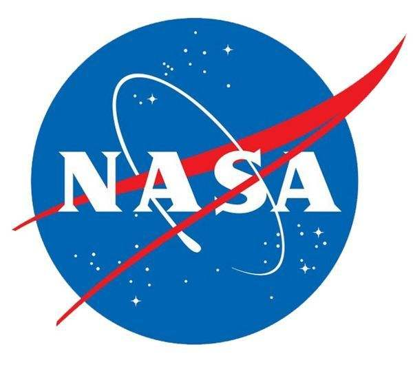

Planets data

Data about the planets of our solar system (Planetary facts taken from Nasa's Planetary Fact Sheet -
Metric).
|
Name |
Mass (1024kg ) |
Dlameter (km) |
Dansity (kg/m3) |
Gravity (m/s2) |
Length of day(hours) |
Distance from Sun(106km) |
Mean temperature (℃) |
Number of moons |
Notes |
| Terrestial planets |
Mercury |
0.330 |
4879 |
5427 |
3.7 |
4222.60 |
57.9 |
167 |
0 |
Closest to the Sun |
| Venus |
4.87 |
12104 |
5243 |
8.9 |
2820.0 |
108.2 |
464 |
0 |
|
| Earth |
5.97 |
12756 |
5514 |
9.8 |
24.0 |
149.6 |
15 |
1 |
Our World |
| Mars |
0.642 |
6792 |
3933 |
3.7 |
24.7 |
227.9 |
-65 |
2 |
The red planet |
| Jovian planets |
Gas giants |
Juplter |
1898 |
142984 |
1326 |
23.1 |
9.9 |
778.6 |
-110 |
67 |
The largest planet |
| Saturn |
568 |
120536 |
687 |
9.0 |
10.7 |
1433.5 |
-140 |
62 |
|
| Ice giants |
Uranus |
86.8 |
51118 |
1271 |
8.7 |
17.2 |
2872.5 |
-195 |
27 |
|
| Neptune |
102 |
49528 |
1638 |
11.0 |
16.1 |
4495.1 |
-200 |
14 |
|
| Dwarf planets |
Pluto |
0.0146 |
2370 |
2095 |
0.7 |
153.3 |
5906.4 |
-225 |
5 |
Declassified as a planet in 2006,but this remains controversial. |